Volume of Solid of Revolution¶
Suppose that a function $f$ is continuous and nonnegative on $[a,b]$.
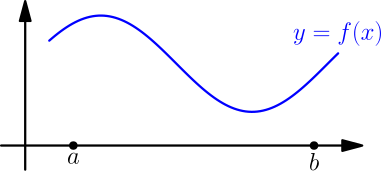
Let's rotate this curve about the $x$ axis.
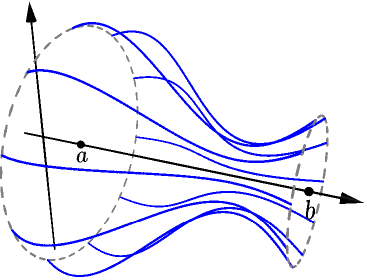
This forms a 3D object called solid of revolution of $f$ on the interval $[a,b]$. Our goal is to calculate the volume of this object.
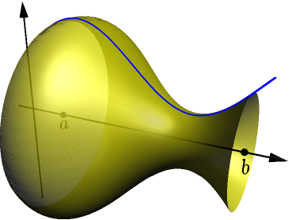
Consider a partition of $[a,b]$. Let's name the intervals of the partition $I_1,I_2,\dots,I_n$, where $n$ is the number of intervals. In the picture, we have $n=5$.
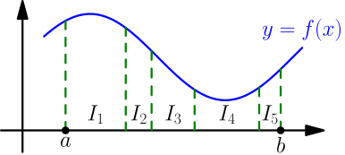
On each interval of the partition, we create a cylinder that touches the surface of the solid of revolution but is as small as possible.
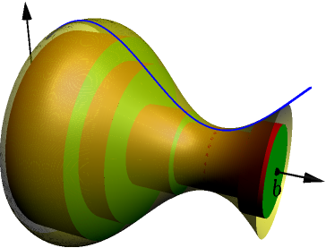
This might be easier to see without the solid of revolution in the way:
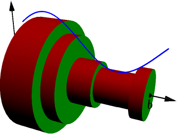
Here's what it looks like from the side:
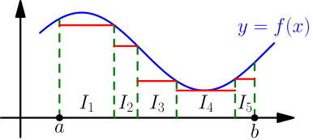
Let $I$ be one of the intervals, and consider the cylinder corresponding to it. Because the cylinder touches the surface of the solid of revolution, its radius is $f(x)$, with some $x \in I$. Then the area of its flat side is $\pi f(x)^2$. Because we chose the cylinder to be as small as possible, the area is the smallest of these areas we can have with $x \in I$. We can write this as $$ \text{cylinder flat side area} = \min_{x \in I} \left(\pi f(x)^2\right). $$ The thickness of the cylinder is length of the interval $I$, and $$ \begin{align} \text{cylinder volume} &= \text{thickness} \cdot \text{flat side area} \\ &= (\text{length of $I$})\min_{x \in I} \left(\pi f(x)^2\right). \end{align} $$ We get $$ \begin{align} \text{total volume of cylinders} &= (\text{length of $I_1$})\min_{x \in I_1} \left(\pi f(x)^2\right) \\ &\quad {}+ (\text{length of $I_2$})\min_{x \in I_2} \left(\pi f(x)^2\right) \\ &\quad {}+\dots \\ &\quad {}+ (\text{length of $I_n$})\min_{x \in I_n} \left(\pi f(x)^2\right). \end{align} $$ This is the lower sum of $\pi f(x)^2$ on $\leftsquarebracket a,b]$ with the partition we have. Because all cylinders are inside the solid of revolution, we get $$ \text{volume of solid of revolution} \ge \text{lower sum of $\pi f(x)^2$ on $[a,b]$}. $$ By instead placing cylinders outside the solid of revolution, we similarly get $$ \text{volume of solid of revolution} \le \text{upper sum of $\pi f(x)^2$ on $[a,b]$}. $$ Because the volume of solid of revolution is between all upper and lower sums of $\pi f(x)^2$ on $\leftsquarebracket a,b]$, by definition of integral, it must be $\int_a^b \pi f(x)^2\ dx$.
Suppose that a function $f$ is continuous on $[a,b]$ and assume that $f(x) \ge 0$ for all $x \in [a,b]$. Then the volume of the solid of revolution of $f$ on $[a,b]$ is $$ \int_a^b \pi f(x)^2\ dx. $$

Example: solid of revolution of parabola¶
Consider the solid of revolution created by rotating $y=x^2$ on $[-2,2]$ about the x-axis.
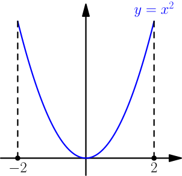
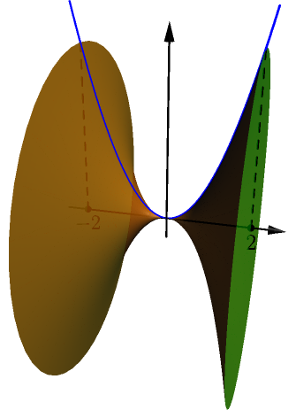
By choosing $f(x)=x^2$ in the above result, we get that the volume of this solid of revolution is $$ \begin{align} \int_{-2}^2 \pi(x^2)^2\ dx &= \pi\int_{-2}^2 x^4\ dx = \pi\left[ \frac{1}{5}x^5 \right]_{-2}^2 \\ &= \pi\left( \frac{1}{5} 2^5-\frac{1}{5}(-2)^5 \right) = \frac{64}{5}\pi. \end{align} $$
Example: volume of ball¶
Consider the upper half of the circle with radius $r$ centered at $(0,0)$.
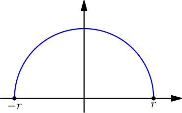
The solid of revolution of this arc is a ball of radius $r$.

For calculating the volume of this ball, we need to write the circle arc as $y=f(x)$, with some function $f$. The equation of this circle (TODO) is $$ x^2 + y^2 = r^2, $$ and from here, we can solve $$ y = \pm\sqrt{r^2-x^2}. $$ The upper half of the circle corresponds to $y \ge 0$, so we choose the solution with $+$. The volume of the ball is $$ \begin{align} \int_{-r}^r \pi\left(\sqrt{r^2-x^2}\right)^2\ dx &= \int_{-r}^r \pi(r^2-x^2)\ dx \\ &= \pi\left( \int_{-r}^r r^2\ dx - \int_{-r}^r x^2\ dx \right) \\ &= \pi\left( \left[ r^2x \right]_{-r}^r - \left[ \frac{1}{3}x^3 \right]_{-r}^r \right) \\ &= \pi\left( r^3-r^2(-r) - \left( \frac{1}{3}r^3 - \frac{1}{3}(-r)^3 \right)\right) \\ &= \pi\left( 2r^3 - \frac{2}{3}r^3 \right) = \frac{4}{3}\pi r^3. \end{align} $$
The volume of a ball with radius $r$ is $\frac{4}{3} \pi r^3$.
Example: volume of cone¶
We calculate the volume of a cone with radius $r$ and height $h$. In the following picture, the lines representing $r$ and $h$ are inside the cone.
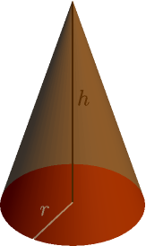
Let's tip the cone on its side and put the $x$ axis through its center.
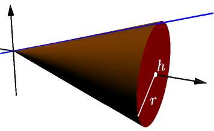
This cone is what we get when a line going through $(0,0)$ and $(h,r)$ rotates about the $x$ axis.
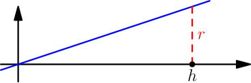
The vector $\vec d = h\I + r\J$ goes in the direction of the line, so the slope of the line is $$ s = \frac{d_y}{d_x} = \frac{r}{h}. $$ Because the line also goes through $(0,0)$, its equation is $y=sx+0$, which is $y=\frac{r}{h} x$. Now the cone volume is $$ \begin{align} \int_0^h \pi\left(\frac{r}{h}x\right)^2\ dx &= \int_0^h \pi\frac{r^2}{h^2}x^2\ dx = \pi\frac{r^2}{h^2}\int_0^h x^2\ dx \\ &= \pi\frac{r^2}{h^2}\left[ \frac{1}{3}x^3 \right]_0^h = \pi\frac{r^2}{h^2}\left( \frac{1}{3}h^3 - 0 \right) \\ &= \frac{\pi r^2h^3}{3h^2} = \frac{1}{3}\pi r^2h. \end{align} $$
The volume of a cone with radius $r$ and height $h$ is $\frac{1}{3}\pi r^2h$.
Note that the volume of a cylinder with height $h$ and radius $r$ is $\pi r^2h$, which is 3 times bigger than the cone volume. So, if you fill the cones drawn below with water and pour that water into the cylinder, then the cylinder will be full of water, and you won't have any water left over.
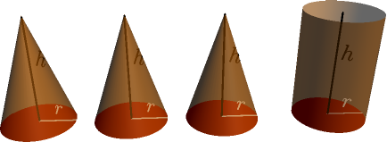